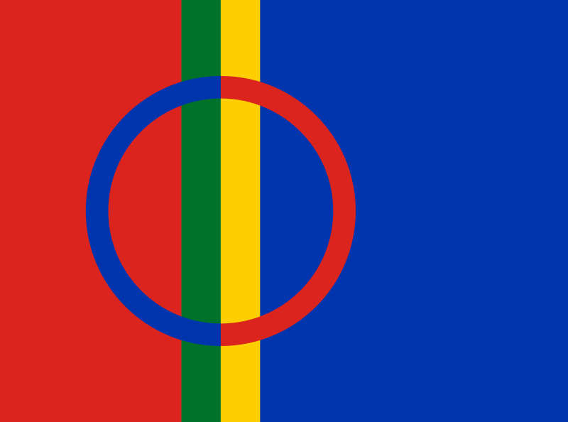

Le drapeau des Samis
Le drapeau Sami date de 1986, il a été créé en Norvège par l’artiste Astrid Båhl de Skibotn et inauguré en Suède. Il est commun aux quatre pays de la Laponie: la Norvège, la Suède, la Finlande et la Russie. Le cercle du drapeau représente le soleil (en rouge) et la lune (en bleu). Les couleurs restantes sont le vert pour la nature, le bleu représente l’eau, le jaune est relatif au soleil et enfin le rouge correspond à la chaleur et l’amour. Ces quatre couleurs sont les celles des Sami, qu’on peut retrouver sur le Kolt, le costume traditionnel.
